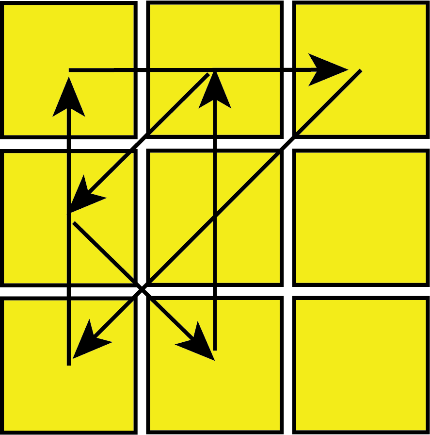

CFOP Method-Step 4: Permute Last Layer (PLL)

The last step of the CFOP/Fridrich method is to permute the last layer (PLL). One look PLL solves the top face in 1 step, with 21 algorithms/different swaps. PLL should be the easiest step to learn after beginner's method, as there are the least number of algorithms to memorize for this step, and many of the algorithms are all very simliar. PLL should be the first step of this guide to learn (although I probably should have written that earlier), as anyone that is able to complete the Beginner's Method should be able to memorize PLL.
You should already know 6 PLL algorithms from 2-look PLL, and the rest of the algorithms are all variation of each other (as you can't do much without messing up the cube at this point) As this is likely the first step of CFOP that many memorize, it's probably best to start slow, learning 2-4 algorithms each day, and practicing already learned algorithms.
Each of the possible PLL swaps have a name, describing the shape of the swap (although they don't really all resemble their letter). PLL will take a bit of practice outside of memorizing algorithms, as you will need to know which way the colours of the sides should be arranged. Recognition of PLL cases can be done by only looking at 2 faces, but is probably easier no remember the patterns on 3 faces. Unfortunately, the images here don't show the patterns on the sides on them, so you may need to make some drawings to remember the positions.
Edges Only:
This is also the 2nd part of 2-look PLL. As these are widely considered the best PLLs, and COLL and 2-look PLL will always end up in these cases, there are a lot a different ways to do these permutations. If you find the single M move hard to do quickly on Z-perm, start with a y move and then replace the M moves with M' moves.
 | U-Perm (a): R U' R U R U R U' R' U' R2 |
 | U-Perm (b): R' U R' U' R' U' R' U R U R2 |
 | H-Perm: M2' U M2' U2 M2' U M2' |
 | Z-Perm: M2 U M2 U M U2 M2 U2 M U2 |
Corners Only:
A-Perm (a): x L2 D2 L' U' L D2 L' U L' | |
 | A-Perm (b): x' L2 D2 L U L' D2 L U' L |
 | E-Perm: x' L' U L D' L' U' L D L' U' L D' L' U L D |
Edges and Corners:
While the G-perm looks complicated, you can tell which G-perm you have by pointing the 2 corner colours that match to the left, and looking at the solved 'block'. Which are the 2 squares the arrows are not touching. The other cases should be fairly easy to recognize, but it helps to look at the corner patterns first.
F-Perm: R' U' F' R U R' U' R' F R2 U' R' U' R U R' U R | |
G-Perm (a): R2 U R' U R' U' R U' R2 U' D R' U R D' | |
G-Perm (c): R2 U' R U' R U R' U R2 U D' R U' R' D | |
J-Perm (a): x R2 F R F' R U2 r' U r U2 | |
R-Perm (a): R U' R' U' R U R D R' U' R D' R' U2 R | |
N-Perm (a): R U R' U R U R' F' R U R' U' R' F R2 U' R' U2 R U' R' | |
V-Perm: R' U R' U' y R' F' R2 U' R' U R' F R F |
T-Perm: R U R' U' R' F R2 U' R' U' R U R' F' | |
 | G-Perm (b): R' U' R U D' R2 U R' U R U' R U' R2 D |
|  | G-Perm (d): R U R' U' D R2 U' R U' R' U R' U R2 D' |
 | J-Perm (b): R U R' F' R U R' U' R' F R2 U' R' |
R-Perm (b): R2 F R U R U' R' F' R U2 R' U2 R | |
N-Perm (b): R' U R U' R' F' U' F R U R' F R' F' R U' R | |
 | Y-Perm: F R U' R' U' R U R' F' R U R' U' R' F R F' |